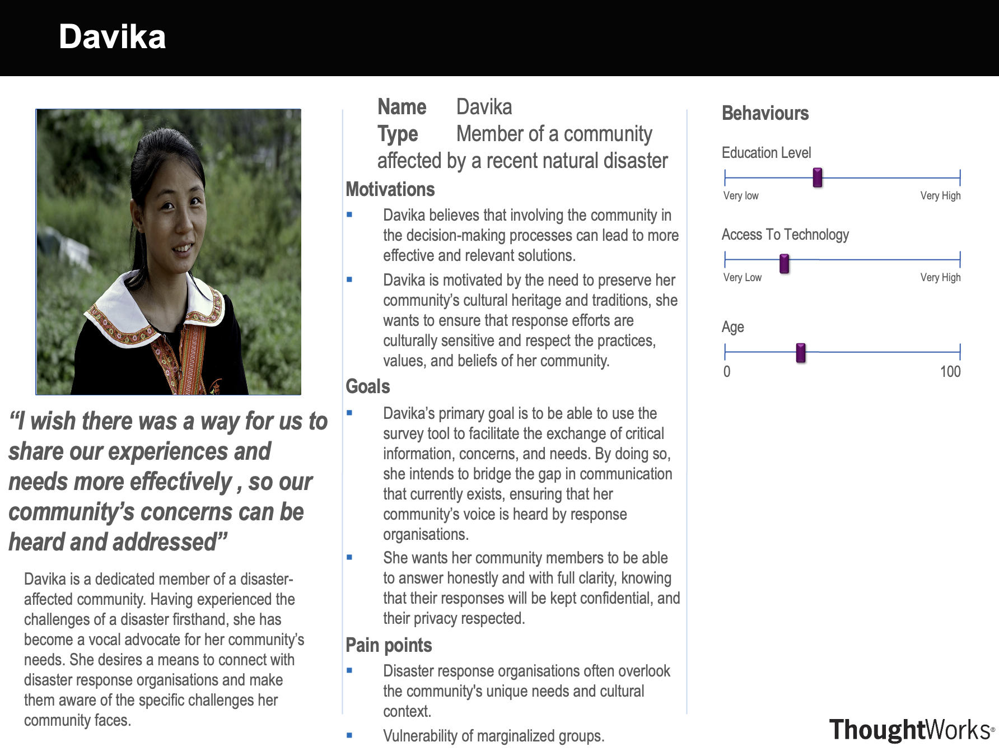

Client Introduction
The International Federation of Red Cross and Red Crescent Societies (IFRC) is a worldwide humanitarian aid organisation that reaches 160 million people each year through its 192 member National Societies. This global organization is dedicated to providing relief and support before, during, and after disasters and health emergencies, aiming to meet the needs and improve the lives of vulnerable people.
Project Background
A significant hurdle, directed to the IFRC, is the timely and efficient collection of feedback and insights from communities, particularly those nestled in rural and remote regions. Furthermore, it's crucial that this valuable data is presented in a clear and accessible manner, enabling swift analysis and action. This project can help ensure that the IFRC can respond rapidly and effectively to the pressing needs of the communities it serves, reinforcing its commitment to making a meaningful difference in the lives of the vulnerable.
Project Goals
The primary goal of the RedCrossConnect project is to develop a digital platform that enables the IFRC to collect, analyse, and act upon feedback and insights from communities in a timely and efficient manner. This platform will facilitate the collection of feedback from communities, particularly those in rural and remote regions, and present this data in a clear and accessible manner. This will enable the IFRC to respond rapidly and effectively to the pressing needs of the communities it serves, reinforcing its commitment to making a meaningful difference in the lives of the vulnerable.
Beyond data collection, the platform should also feature an intuitive dashboard accessible by both the IFRC and the public, designed to display results from survey responses through visually engaging charts and graphics for easy comprehension and analysis. Furthermore, the dashboard should also include a feature to share the results on social media, ensuring that the IFRC can spread the word about the pressing needs of the communities it serves, reinforcing its commitment to making a meaningful difference to many communities.
Requirements Gathering
We have decided to go with a semi-structured interview as it enables us to delve deeper into the subject matter and inquire further when needed.
Interview with IFRC disaster / emergency response advisor
Q: What sort of information does the IFRC need to collect during disaster response and community engagement efforts?
A: For effective disaster response, the IFRC collects critical data, including affected areas, community demographics, health statistics, infrastructure conditions, and geospatial insights.
Q: How would you like to see the results of the survey on the dashboard?
A: We need the dashboard to clearly and concisely visualize both quantitative and qualitative data, providing key insights in a user-friendly manner for informed decision-making.
Q: What challenges do the IFRC staff encounter during data collection processes, and how can the DEH survey tool address these challenges?
A: We faced issues with slow data collection, limited technology access in rural regions, and data security. The survey tool needs to be simple, widely accessible, enable fast data gathering in remote areas, and uphold strict data security to protect confidentiality.
Q: What are the desired attributes for the survey format?
A: The survey should be simple for easy translation and accessible to all education levels, with clear questions to ensure accurate data from diverse groups.
Interview with member of underserved community
Q: What are the desired attributes for the survey format?
A: The survey should collect both quantitative and qualitative data, enabling detailed insights and explanations to better understand community needs and concerns for the IFRC.
Q: How important is it that we keep your responses confidential?
A: It's crucial to ensure confidentiality in survey responses on sensitive topics like vaccines to encourage honest sharing, particularly among those hesitant due to community beliefs.
Q: What features could be included in the dashboard that would make it easier for the IFRC to help your community?
A: The dashboard should have a user-friendly interface that allows us as community members to view results to the responses as a whole. Furthermore, the dashboard should have an easy method to share responses to social media to increase awareness.
Personas
After interviewing and gathering the user requirements, we then create personas for potential users to better understand their wants and needs for the platform.

Use Case Diagram
After understanding the requirements and needs of the users, we illustrated use case diagrams to display the different actions certain useres (Normal user and IFRC member) can undertake.
MoSCoW List
Finally, we constructed a MoSCoW list of requirements to understand the different prioritisation factors and their respective requirements.
| Priority | Requirement |
|---|---|
| Must-have |
|
| Should-have |
|
| Could-have |
|
| Won't-have |
|
| Priority | Requirement |
|---|---|
| Must-have |
|
| Should-have |
|
| Could-have |
|
| Won't-have |
|